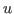
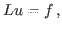
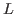
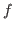

Next: About this document ...
Multigrid methods are used to compute the solution 


is typically a discretization of a partial differential equation (PDE) and
a corresponding given right hand side. Local Fourier Analysis (LFA) is well known to provide quantitative estimates for the speed of convergence of multigrid methods by analyzing the involved operators in the frequency domain.For the initial formulation of LFA it was crucial to assume that all involved operators have constant coefficients. In many applications the coefficients vary continuously in space. Thus, asymptotically or if the grid is fine enough the discrete operator will only vary slightly between neighboring grid points and hence can be well approximated by an operator with locally constant coefficients. Thus constant coefficient often are a reasonable assumption.
However, when analyzing problems with jumping coefficients or when the variance of the coefficient is large this assumption is too restrictive. A reason for this is that interpolation and restriction operators typically act differently on variables that have a coarse grid representative and those who do not have one. Further, the analysis of multigrid methods itself require an extension of this straight forward approach, e.g. pattern relaxation schemes like the red-black Gaufl-Seidel where red points of the grid are treated differently than black ones.
It is possible to analyze the latter when allowing for interaction of certain frequencies. Furthermore, it turns out that when allowing for more frequencies to interact operators given by increasingly complex patterns can be analyzed.
In this talk a general framework for analyzing pattern structured operators, i.e., operators whose action is invariant under certain shifts of the input function, will be introduced and different applications will be discussed.